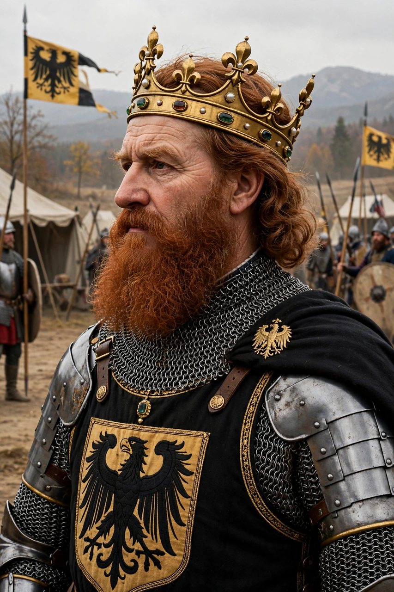

Reign: 1155–1190 (King of Germany from 1152)
Nickname: Barbarossa ('red beard')
Died: 10 June 1190, Saleph River, Cilicia
Frederick I, known as Barbarossa, was Holy Roman Emperor from 1155 until his death on the Third Crusade in 1190. A member of the Hohenstaufen dynasty, he sought to restore imperial authority in Germany and Italy.
Frederick campaigned repeatedly in Italy, asserting imperial rights at Roncaglia, destroying Milan in 1162, but suffering defeat by the Lombard League at Legnano in 1176 and reconciling with Pope Alexander III at Venice in 1177.
At home he balanced the great princes, broke the power of Henry the Lion of Saxony and Bavaria in 1180, and promoted towns, law and courtly culture. Relations with Manuel I Komnenos alternated between alliance and rivalry.
Taking the cross in 1188, Frederick marched overland through the Balkans and Anatolia, winning at Iconium, but drowned in the Saleph River in June 1190; his army largely dispersed. German legend later held that Barbarossa sleeps in the Kyffhäuser mountain and will one day return.